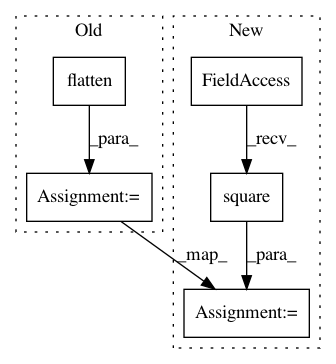

956ac38fd58a1ef65c18dffc06a22d2e628e3a16,testing/test_conditionals.py,WhitenTestGaussian,test_whiten,#WhitenTestGaussian#,123
Before Change
L = GPflow.slinalg.cholesky(K)
V = GPflow.slinalg.Solve("lower_triangular")(L, self.F)
Li = GPflow.slinalg.Solve("lower_triangular")(L, eye(3))
V_var = (Li.dot(tf.diag(self.F_sqrt.flatten()**2)).dot(Li.T))
V_sqrt = GPflow.slinalg.cholesky(V_var)[:,:,None]
Fstar_mean, Fstar_var = GPflow.conditionals.gaussian_gp_predict(self.Xs, self.X, self.k, self.F, self.F_sqrt)
Fstar_w_mean, Fstar_w_var = GPflow.conditionals.gaussian_gp_predict_whitened(self.Xs, self.X, self.k, V, V_sqrt)
After Change
L = tf.cholesky(K)
V = tf.user_ops.triangular_solve(L, self.F, "lower")
Li = tf.user_ops.triangular_solve(L, eye(3), "lower")
V_var = tf.matmul( tf.matmul(Li, tf.diag(tf.square(tf.reshape(self.F_sqrt, (-1,))))), tf.transpose(Li))
V_sqrt = tf.expand_dims(tf.cholesky(V_var) ,2)
Fstar_mean, Fstar_var = GPflow.conditionals.gaussian_gp_predict(self.Xs, self.X, self.k, self.F, self.F_sqrt)
Fstar_w_mean, Fstar_w_var = GPflow.conditionals.gaussian_gp_predict_whitened(self.Xs, self.X, self.k, V, V_sqrt)
In pattern: SUPERPATTERN
Frequency: 3
Non-data size: 5
Instances
Project Name: GPflow/GPflow
Commit Name: 956ac38fd58a1ef65c18dffc06a22d2e628e3a16
Time: 2016-01-18
Author: james.hensman@gmail.com
File Name: testing/test_conditionals.py
Class Name: WhitenTestGaussian
Method Name: test_whiten
Project Name: keras-team/autokeras
Commit Name: 2f1f42eeb68c64ff991c0ae2e8253a9305e90f74
Time: 2019-07-04
Author: jhfjhfj1@gmail.com
File Name: autokeras/hypermodel/processor.py
Class Name: Normalize
Method Name: fit